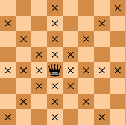

Ферзь является самой сильной фигурой. Он может двигаться по любой прямой (по горизонтали, вертикали или диагоналям) на любое возможное расстояние, но не перепрыгивая через фигуры своего цвета. И, как и у всех фигур, если ферзь берет фигуру соперника, его движение заканчивается. Щелкните по диаграмме ниже, чтобы увидеть, как ходит ферзь. Обратите внимание, как белый ферзь берет черного ферзя, а затем черный король вынужден ходить.
